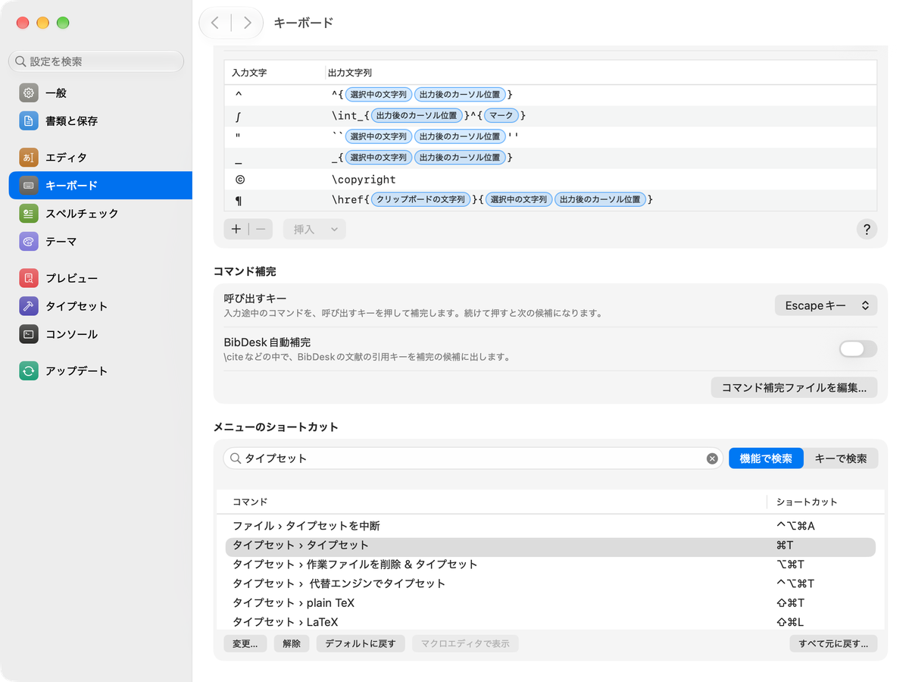
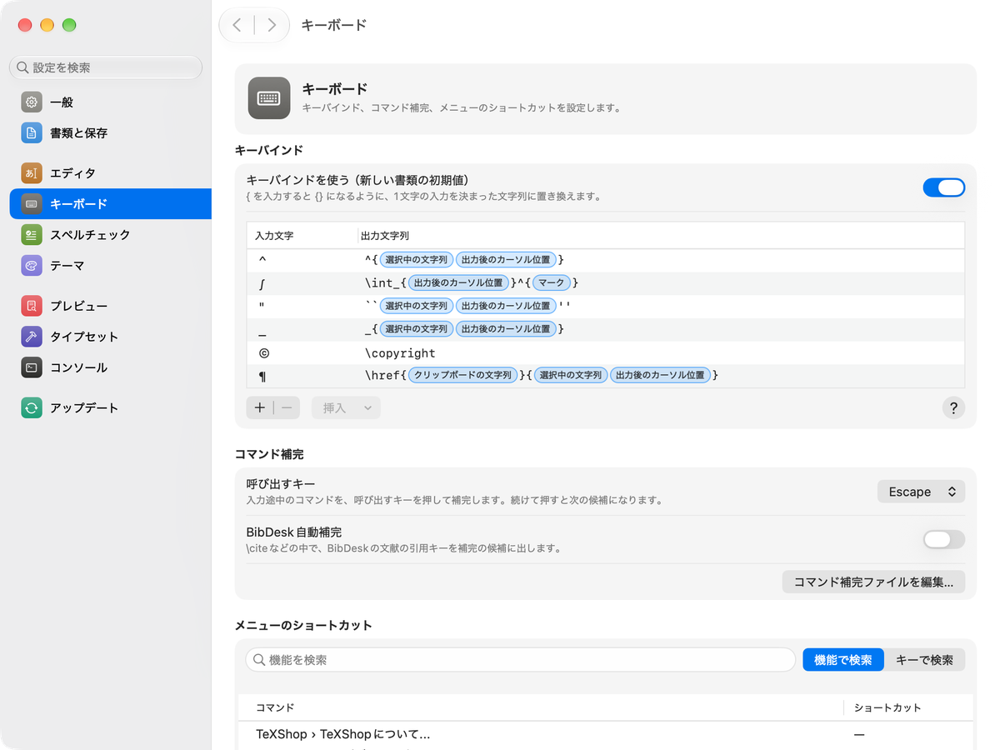
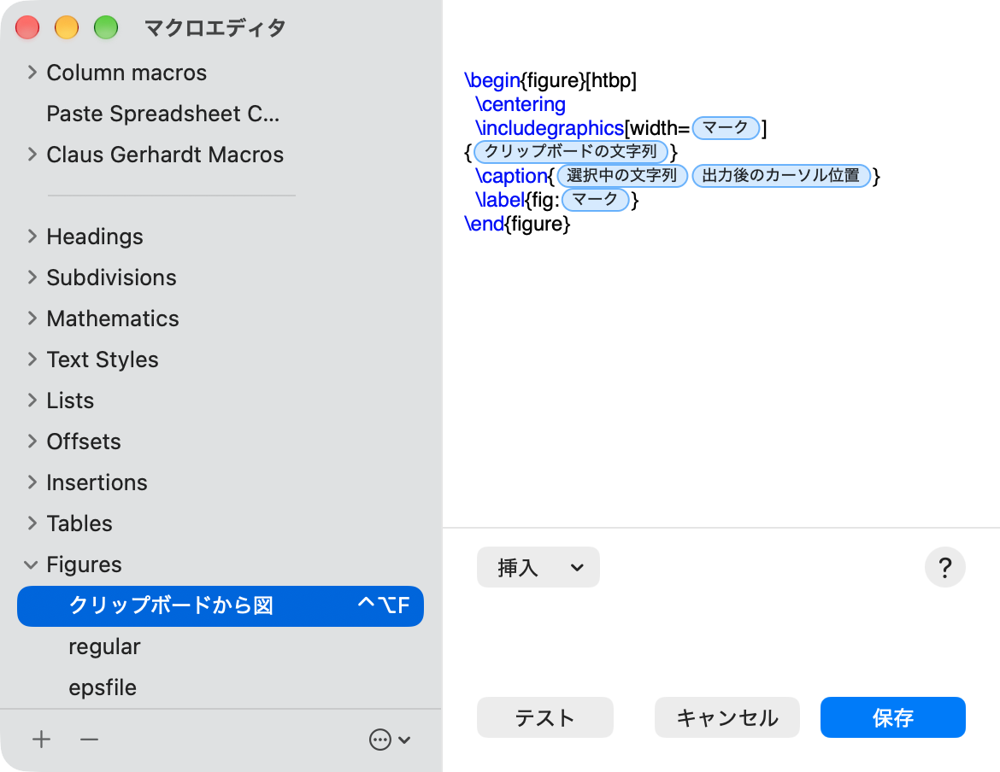
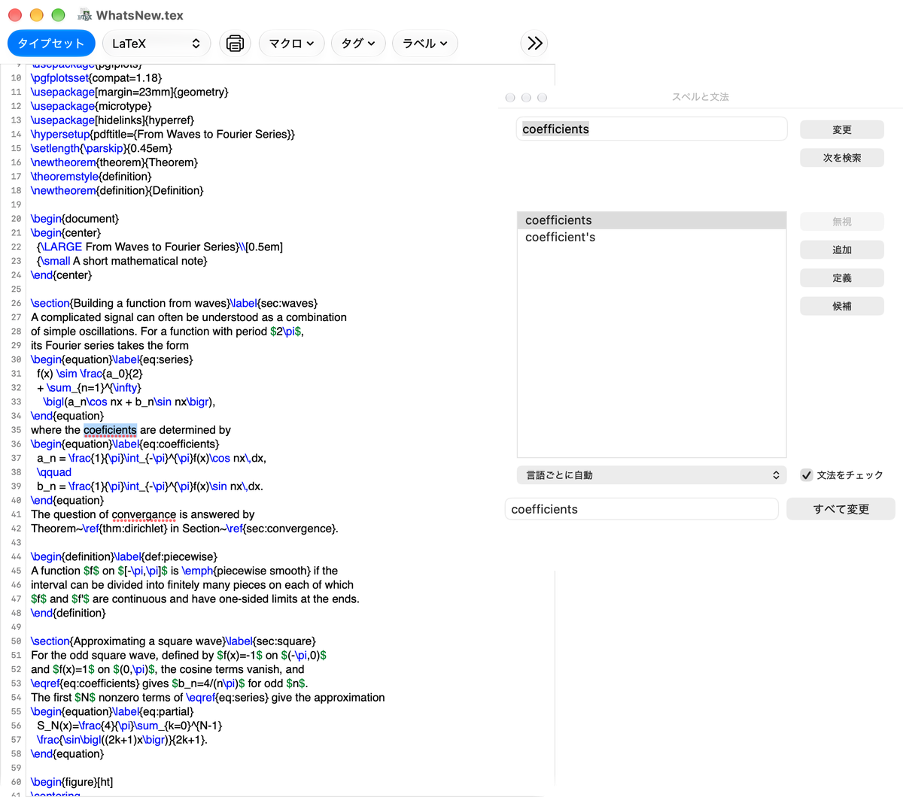
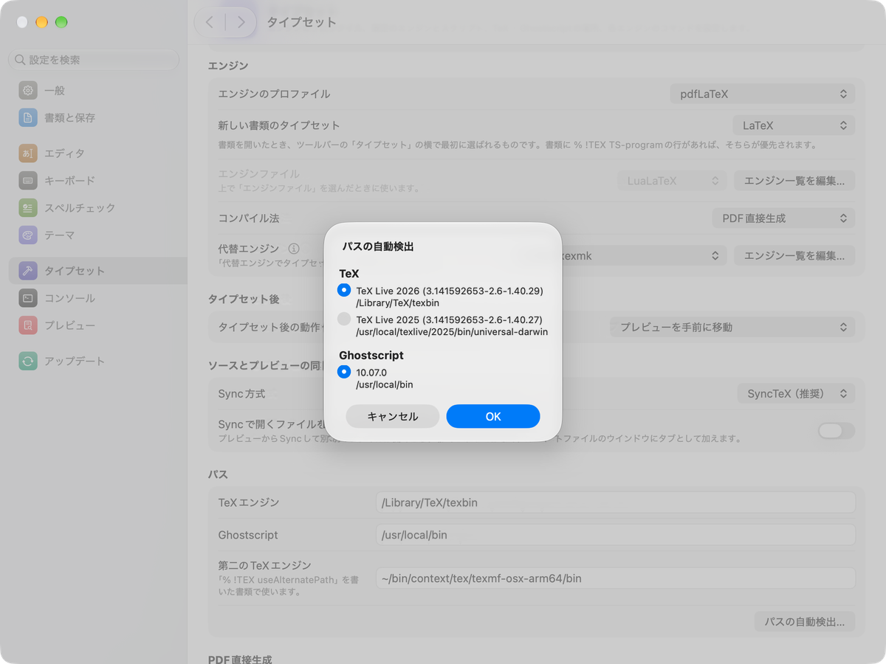
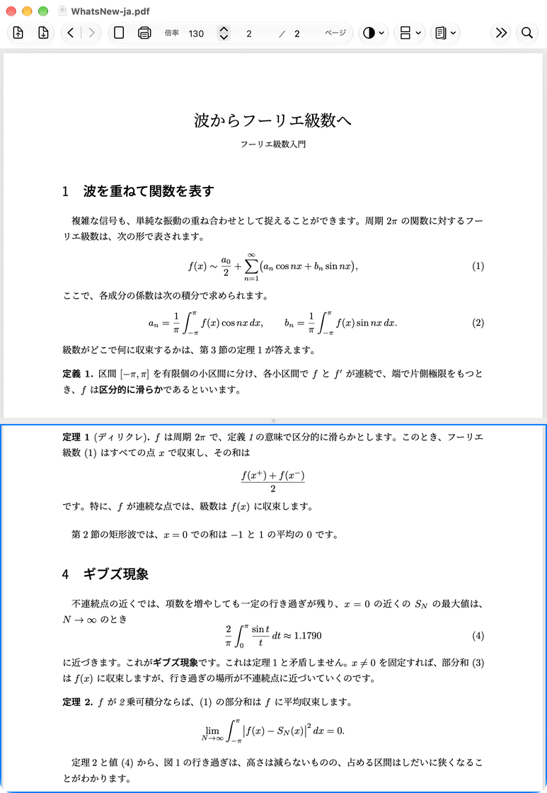

新しく設計し直された設定画面
設定画面を一から作り直しました。10の分類のサイドバーと、すべての設定を探せる検索欄を備え、分類ごとに名前の付いたグループに整理しました。

TeXShop 6.00（準備中） · 最新のベータを試す
TeXShop 6では、新しく設計し直された設定画面、あらゆるキーバインドのカスタマイズ、LaTeXの構文を考慮するスペルチェック、新しい検索パネルと複数置換、TeXのパスの自動設定、プロファイルによるエンジンの選択、固定できるリンクのポップアップ、本文の統計を備えたステータスバーを加え、分割したプレビューウインドウの動きを改め、アプリのアイコンを新しくしました。
設定画面を一から作り直しました。10の分類のサイドバーと、すべての設定を探せる検索欄を備え、分類ごとに名前の付いたグループに整理しました。
メニューのショートカットは、Xcodeと同じように「設定」→「キーボード」の一覧の中でキーを押して記録します。機能の名前でもキーでも探せ、ほかで使われているキーは知らせ、1つずつでもまとめてでも元に戻せます。1文字の入力を決まった文字列に置き換えるキーバインドは、同じ所の一覧で編集します。文字列には、選択中の文字列、出力後のカーソル位置、クリップボードの文字列、マークを入れられます。マクロのショートカットも、マクロエディタの一覧の中で同じように記録します。



TeXのコマンド、コメント、数式と、ラベル・キー・長さなどの引数を飛ばして検査します。よく使うパッケージの規則を備え、規則は編集できます。「すべて変更」は書類の中の同じ語をまとめて置き換え、1回で取り消せます。

正規表現を使える、新しい検索と置換のパネルです。「すべて検索」はすべての一致を行とともに一覧にし、「すべてハイライト」は本文の中の一致を示します。検索欄と置換欄はソースのフォントの大きさの等幅フォントとソースのテーマで表示し、正規表現の部分ごとに色を分けて、誤りを示します。時間のかかる処理は裏で進み、キャンセルできます。

検索と置換の組を並べた一覧に名前を付けて保存し、上から順にまとめて適用します。正規表現も使え、選択範囲だけにも適用でき、取り消しは1回です。一覧はCotEditorの置換定義と同じJSONで保存し、「編集」→「検索」→「複数置換」から本文全体にすぐ適用できます。Unicode文字とajmacrosの命令を相互に変換する見本の組を同梱しました。

ソースの下のステータスバーに、書類の行数・文字数・単語数と、その横に選択範囲の数、カーソルの行と列、ファイルの大きさを表示します。文字は見たとおりの1文字で数えます。「本文の統計…」を開くと、TeXの命令を除いた本文を、\input・\includeで読み込むファイルも含めて、ソースと並べて数えます。保存は要りません。「ソース」→「ステータスバーを表示」でバーを隠せます。

初めて起動したとき、TeXShopはTeXとGhostscriptのインストール先を探し、バージョンとともに一覧にします。いちばん新しいものが選ばれ、TeXとGhostscriptのそれぞれでほかのものも選べます。あとからでも、「設定」→「タイプセット」の「パスの自動検出…」で探し直せます。

「設定」→「タイプセット」のメニューでエンジンのプロファイルを選ぶと、確認のあと、そのTeXエンジンのタイプセットとkpsewhichのコマンド、BibTeXエンジン、索引作成とMetaPostのコマンド、otfパッケージの\UTF / \CIDへの自動変換がまとめて設定されます。日本語のプロファイルは、新しい書類のエンコーディングをUTF-8にし、辞書を「言語を自動判別」にし、UTF-8-MACの変換もオンにします。適用する前に、設定される値が一覧になり、変わる値に印が付きます。今の設定を残したい値は外せ、latexmkを使うかどうかも選べます。初めて起動したときにも選べます。ほかの設定は変わりません。

Optionキーで内部リンクのポップアップを固定できます。固定したポップアップは、動かす、大きさを変える、スクロールすることができます。ポップアップは本文の段の幅に合わせ、リンク先のページのラベルを示し、連続表示では次のページへ続けて表示します。

境界線をドラッグしても、それぞれの部分の上端の内容は動きません。「ビューを切り替え」は二つの部分をそっくり入れ替え、作業中の部分は細い線で示します。「ウインドウを分割してリンク先を表示」は、リンク先をもう一方の部分に表示します。「内容の幅に合わせる」は、本文がウインドウの幅いっぱいになるように倍率を変えます。

行番号をクリックまたはドラッグすると、行全体をまとめて選択できます。ソース、ログ、「実験」のソースで使えます。
macOS 26 Tahoe以降のアイコンのデザインに合わせた、新しいアイコンを搭載しました。ただし、起動中のDockのアイコンは、「設定」→「一般」の「起動中のDockアイコン」で、懐かしのあのデザインに戻せます。2000年から2026年までの4つのデザインから選べ、TeXShopを終了すると新しいアイコンに戻ります。